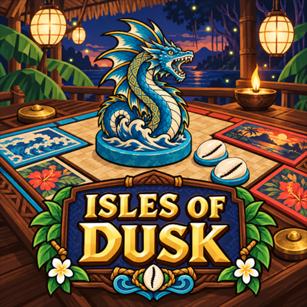

Isles of Dusk
A card battler of Philippine folklore. For iPhone and Android.
Claim the board one row at a time. Play cards from Philippine folklore onto the board, spread your reach across its rows, and outscore your opponent row by row.
In the game
- Island Trials: island after island of opponents, each with its own deck and twist.
- Your decks: collect cards, build decks, and read each creature's folklore.
- Duels with friends: make a room, share the code, and play online.
- A tutorial to learn the table, Practice games, and achievements in Game Center and Google Play Games.
- Free, with no ads and no in-app purchases.
Support
Questions, problems or ideas: mike@finishlinelabs.info